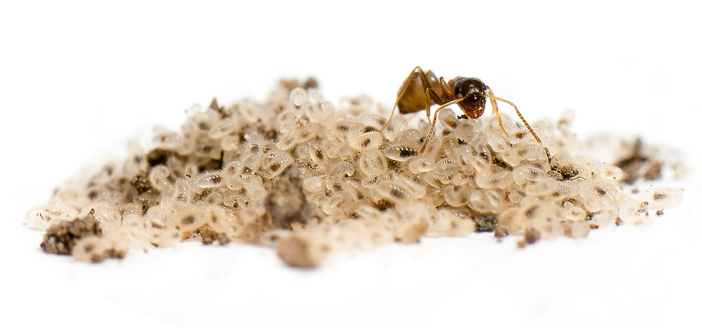

My research interests concern how human activities modify biodiversity patterns and how these changes can give us material and opportunities to understand ecological processes. During my PhD, I studied the consequences of urbanization on biological communities composition, invasive species secondary spread and intraspecific variations (morphological, physiological and behavioral) among urban and rural populations. I used ants (Hymenoptera, Formicidae) as biological model to address my questions.
 Lasius neglectus worker and brood. Photo by T. ColinBiological communities in urbanized landscapes
Urbanization factors shaping spatial distribution of native and invasive ants are species-specific
Urbanization factors shaping spatial distribution of native and invasive ants are species-specific Urbanization is a major global change inducing complex and multiple modifications of landscapes and ecosystems. The spatial distributions of organisms experiencing these modifications will likely shift specifically, depending on each species’ response to each environmental modification induced by urbanization. We sampled two ant genera (Lasius and Tetramorium) at 1248 locations along an urbanization gradient in Lyon, France and used high resolution spatial layers for 18 spatial (e.g., open habitat fragmentation, bioclimatic data and surface temperatures) and temporal (e.g., comparison of Normalized Difference Vegetation Index between 1986-2015) environmental variables associated with urbanization. Coupling two different analytical methods (Outlying Mean Index and Boosted Regression Trees), we showed that each species’ distribution was influenced by its own combination of environmental factors. Two morphologically cryptic Tetramorium species (T. spE and T. spU2) were both highly abundant but with opposite responses to urbanization: while T. spE was favored by urbanized habitat, T. spU2 avoided urbanized areas. Among Lasius species, we detected 69 occurrences of the invasive ant Lasius neglectus, the distribution of which was favored only by embankments along roads. We found that, even at this reduced spatial scale, climatic effects influenced most species and interacted with urbanization factors.
Landscape secondary spread of exotic species
Short Distance Dispersal: Understanding human-mediated dispersal at small spatial scales
The introduction of exotic species and their subsequent spread are rapidly increasing worldwide, owing to the intensification of human activities favoring species dispersal at multiple spatial scales. While a growing documentation exists on long distance dispersal, human-mediated dispersal occurring at short distances is understudied, particularly in theoretical and modeling approaches, despite several evidence of its crucial role in exotic species secondary spread. Here, we aim to decompose the main features of short distance human-mediated dispersal, and compare it to long distance dispersal. We explore how the identity of human activities, as well as the vectors and the networks involved, can affect dispersal parameters (e.g., distance, direction) and consequently invasion success at small spatial extents (local to regional). Our approach should contribute to a more general conceptual framework of human-mediated dispersal at small spatial scales and promote the development of relevant models to describe and predict it. Multidisciplinarity is at the core of this approach, and will require interaction between ecologists, sociologists, economists, computer and transportation scientists, as well as applied scientists engaged in invasive species management and control.
Estimating landscape scale secondary spread by human-mediated and natural dispersal in an invasive ant
Once introduced to a new area, exotic species can spread through landscapes by natural and human-mediated dispersal. Understanding these two processes is essential to provide efficient guidance to conservation managers. Here, we investigated the secondary spread of the invasive ant Lasius neglectus, in Lyon (France), by natural and human-mediated dispersal. We detected L. neglectus colonies in 92 localities and measured the surface occupied by 33 of them. L neglectus colonies occupied surfaces ranging from 44 m2 to 243,000 m2 but most colonies did not exceed 5 ha. From these occurrences and colony measurements, we estimated the roles of human-mediated and natural dispersal in the secondary spread of the ant. Using three human-mediated dispersal models (including one developed here), we show that human-mediated dispersal events occurred over shorter distances (between 1.7 and 38.3 km in average, depending on the model used) compared to previous studies. The annual expansion rate of colony boundaries was estimated between 9.2 and 22.2 m.year-1 for the largest and oldest colony, in line with previous findings in this species. Natural dispersal, although limited at the landscape scale, has the potential to increase the occurrence of human-mediated dispersal events, which may keep the alien species density at a high level in anthropogenized areas.
MoRIS: Modeling, Estimating and Predicting Human-Mediated Secondary Spread of Invasive Species
Human-mediated dispersal acts as a vector for many exotic species, both at the introduction and secondary spread stages. Primary and secondary introductions arise from human-mediated long distance dispersal happening at global scales. Secondary spread occurs at smaller spatial and time scales (e.g. landscape) and results from either natural or human-mediated dispersal. Despite the importance of materials transportation (e.g. landscaping, construction) for the spread of invasive species, few studies have investigated short distance human-mediated dispersal and even less have tried to model it.
- We developed MoRIS (Model of Routes of Invasive Spread), a spatially explicit spread model designed to simulate invasive species dispersal by transport at local to regional spatial scales. MoRIS is an innovative, yet simple model, taking into account the road network topology to influence the direction of dispersal events. MoRIS is designed to minimize a priori making (e.g., expert knowledge), to enable the estimation of human-mediated dispersal parameters based on a simple presence/absence locations dataset and to produce predictive maps of spread.
- We applied MoRIS to the invasive garden ant Lasius neglectus, a particularly relevant species to validate the model as it has no natural dispersal abilities and is thus entirely dispersed by transportation activities. Based on a published presence/absence dataset of L. neglectus in an urbanized landscape (Lyon, France), we estimated the introduction area, the average transportation distance and the frequency of transportation events involved in the invasive ant landscape spread.
- By focusing on human transportation activities and network topology, MoRIS provides a flexible and objective approach widely generalizable to any taxa dispersed by human activities using road network. Besides constituting a useful tool for managers, MoRIS aims to fill a gap in the modeling of human-mediated dispersal at reduced spatial scales and to bring new practical and conceptual insights in its study.
Novel interactions among alien species
With the globalization of human activities, the number of transported species has sharply risen, resulting in landscapes worldwide experiencing the simultaneous spread of numerous invasive species . The impacts of co-occurring invasive species are difficult to predict because such species are likely to interact with each other, which can intensify (e.g. by facilitation or mutualism) or mitigate (e.g. by competition, predation or parasitism) invasion dynamics and consequently have substantial outcomes on impacts and management strategies efficiency.
Invasions of Japanese knotweeds and invasive garden ants in an urbanized landscape
Urbanized landscapes are the theater of multiple simultaneous biological invasions likely to affect spread dynamics when co-occurring introduced species interact with each other. Interactions between widespread invaders call for particular attention because they are likely to be common and because non-additive outcomes of such associations might induce negative consequences (e.g. enhanced population growth increasing impacts or resistance to control). We explored the invasions of two widespread invasive taxa: the Japanese knotweed species complex Fallopia spp. and the invasive garden ant Lasius neglectus, in the urban area of Lyon (France). First, we investigated landscape habitat preferences as well as co-occurrence rates of the two species. We showed that Fallopia spp. and L. neglectus had broadly overlapping environmental preferences (measured by seven landscape variables), but their landscape co-occurrence pattern was random, indicating independent spread and non-obligatory association. Second, as Fallopia spp. produce extra-floral nectar, we estimated the amount of nectar L. neglectus used under field conditions without ant competitors. We estimated that L. neglectus collected 150 to 321 kg of nectar in the month of April (when nectar production is peaking) in a 1162 m² knotweed patch, an amount likely to boost ant population growth. Finally, at six patches of Fallopia spp. surveyed, herbivory levels were low (1-6% loss of leaf surface area) but no relationship between ant abundance (native and invasive) and loss of leaf surface was found. Co-occurrences of Fallopia spp. and L. neglectus are likely to become more common as both taxa colonize landscapes, which could favor the spread and invasion success of the invasive ant.
Co-nvasion of the invasive garden ant Lasius neglectus and the alien ectoparasite fungus Laboulbenia formicarum in an urbanized landscape
In this ongoing project, we explored the co-invasion patterns of the alien ant Lasius neglectus and the alien ectoparasite fungus L. formicarum at landscape scale in the urban area of Lyon (France). This landscape has the particularity to concentrate several L. neglectus populations. The detection of L. formicarum in these populations gave us the opportunity to investigate the ant-fungus co-invasion. We combined several approaches to clarify how the ant is dispersed across the landscape, how the fungus is dispersed among ant populations, and how the environment can influence the expansion of both species.
Intraspecific variations among urban and rural populations
Urbanization induces contrasted environmental conditions over reduced spatial scales. These environmental changes can modify phenotypes of urban dwelling organisms, either by plasticity or local adaptation. Morphological, physiological and behavioral differences between urban and rural populations have been demonstrated for some species but no studies have investigated the three groups of traits simultaneously. However, changes in one trait are likely to have consequences on other traits (e.g., size and aggressiveness), and may even affect selective pressures in complex ways. In this study, we investigated simultaneously morphological, physiological and behavioral traits changes between urban and rural populations of the black garden ant Lasius niger.